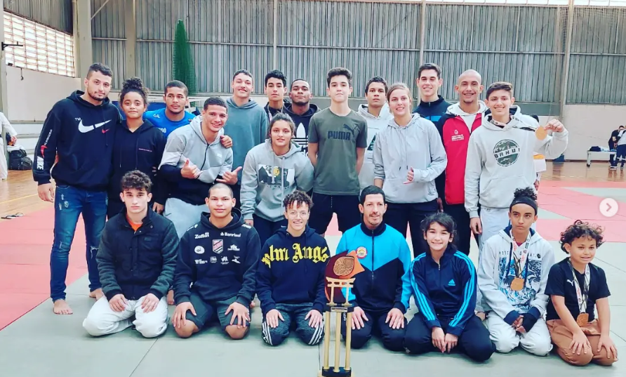

Em 2001, um grupo de amigos fundou uma entidade sem fins lucrativos, com o objetivo de promover a prática esportiva e o desenvolvimento de valores como disciplina, respeito e superação. Ao longo dos anos, firmaram uma parceria com um conceituado clube em São Bernardo do Campo, que permitiu expandir as atividades e atingir um público ainda maior. Nosso foco principal é o Judô — esporte que, além de ser nossa principal modalidade, representa nossa essência.

A Associação Recreativa Cultural Desportiva (ARCD) é uma entidade sem fins lucrativos fundada em 2001. Ao longo de mais de duas décadas, firma parcerias, desenvolve projetos sociais e leva o tatame para dentro de escolas e comunidades de São Bernardo do Campo. Cada kimono vestido representa não apenas um treino, mas uma oportunidade — de crescer, de aprender, de se tornar um cidadão melhor.

Preencha o formulário abaixo e entraremos em contato com você!
Fique por dentro de tudo que acontece na ARCD São Bernardo!